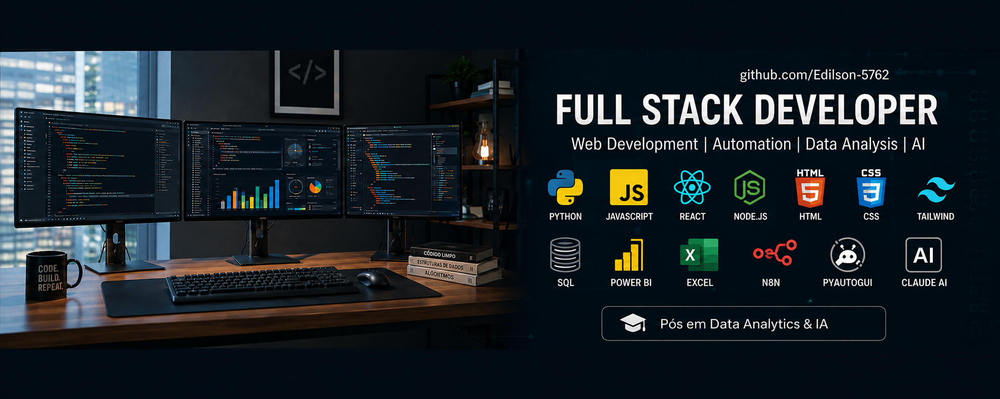
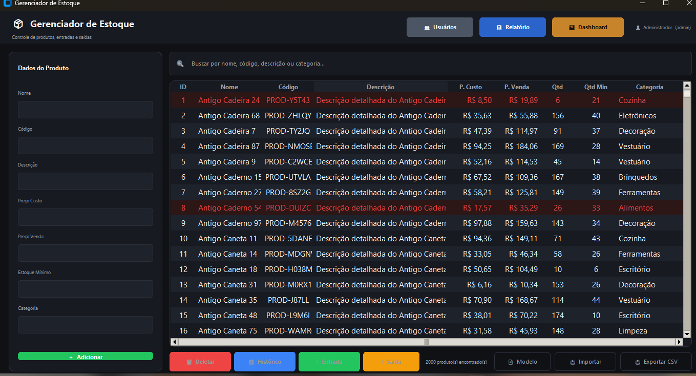
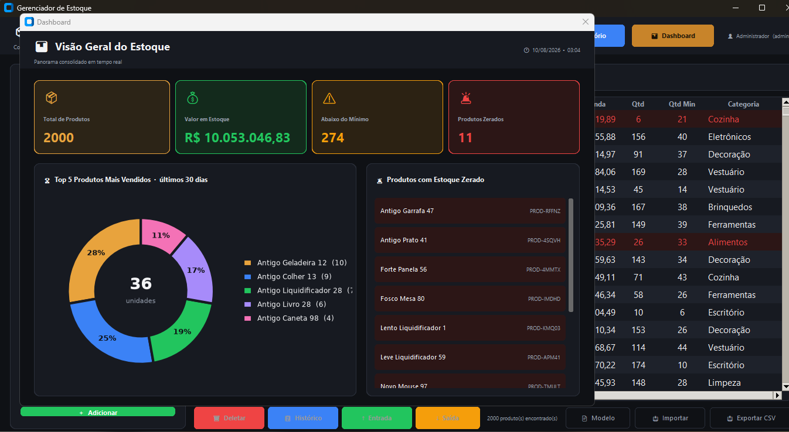
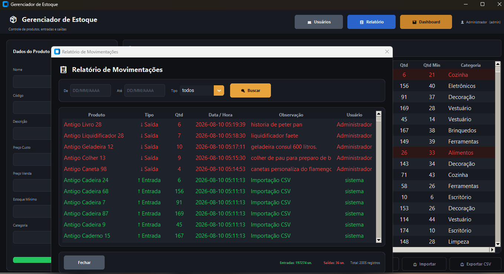
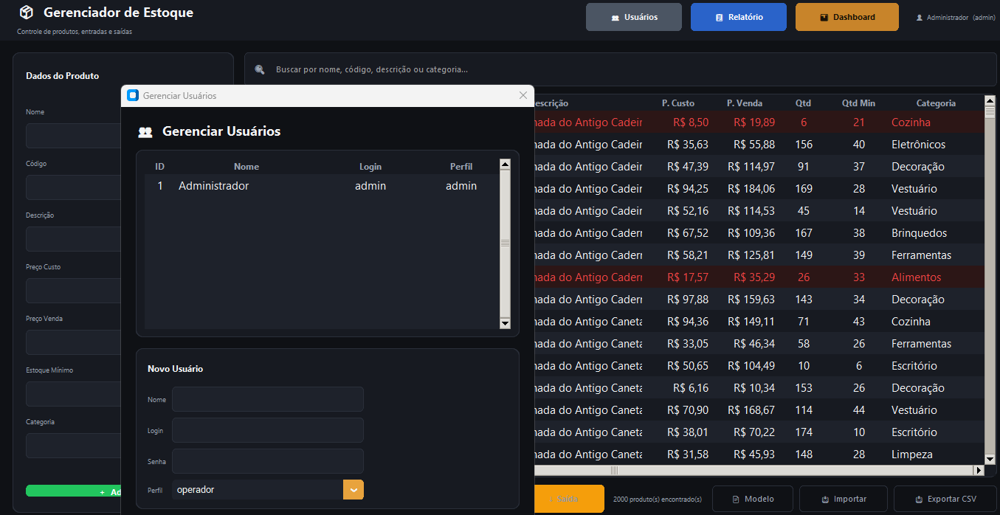
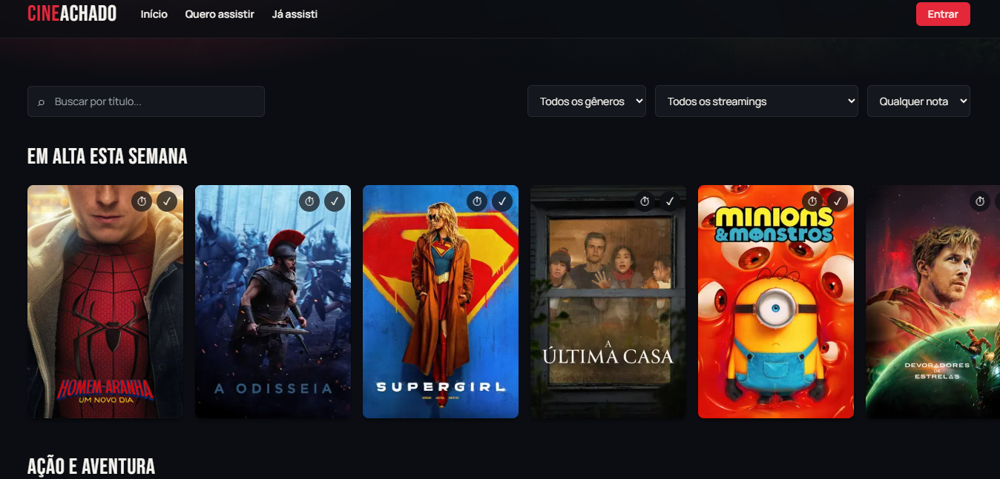
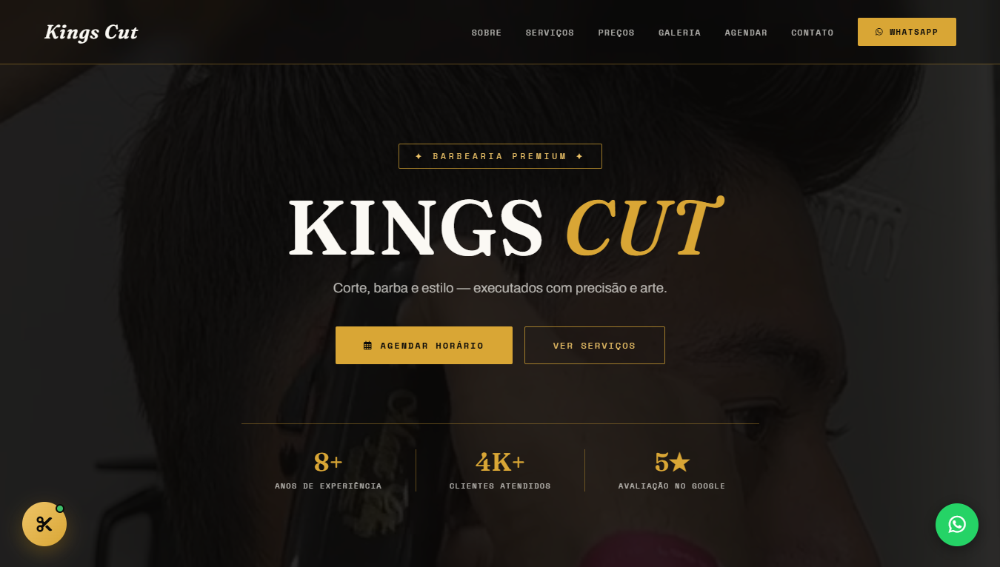

WebCartão Digital
Cartão de visitas digital com minha trajetória, habilidades e canais de contato, para recrutadores e empresas
Ver Projeto

 Dados & BI
Dados & BI
Dashboard de Produção (Power BI → Web)
Painel de indicadores de chão de fábrica com horas produtivas, horas paradas, total produzido, aprovado e rejeitado, e gauges de % produtividade e % qualidade — modelado em Power BI e recriado como página web interativa, com filtros reais por operador e mês.
Ver Projeto Dados & BI
Dados & BI
Relatório de Vendas (Power BI → Web)
Análise de vendas com faturamento total, quantidade vendida por marca, evolução mensal por ano e faturamento por continente — modelado em Power BI e recriado como página web interativa, com filtros reais por ano e marca.
Ver Projeto
Painel Principal
Cadastro, edição e exclusão de produtos, com busca por nome, código, descrição ou categoria. Produtos abaixo do estoque mínimo ficam destacados visualmente.

Dashboard Executivo
Exibe indicadores em tempo real, como total de produtos, valor em estoque, itens abaixo do mínimo e produtos zerados.

Relatório de Movimentações
Permite consultar entradas e saídas por período e tipo de movimentação, exibindo quantidade, data, observação e usuário responsável.

Gerenciamento de Usuários
Administração dos usuários do sistema, com definição de login, senha e perfil de acesso.
Gerenciador de Estoque
Sistema desktop desenvolvido em Python para controle de produtos, movimentações, usuários, relatórios e indicadores de estoque.
 IA & Dados
IA & Dados
Customer Churn Analytics
Análise preditiva de evasão de clientes bancários utilizando Python, tratamento de outliers via IQR e cálculo de Information Value (IV).
Ver Projeto
WebCineAchado
Um aplicativo de streaming totalmente funcional, pronto para produção. 100% construído com Claude Code.
Ver Projeto
WebKings Cut Barbearia
Landing page de barbearia premium com agendamento online, galeria de cortes, depoimentos e chatbot de atendimento.
Ver Projeto